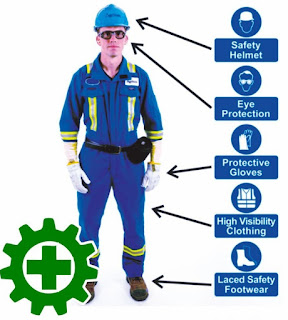

Dalam bidang otomotif keselamatan dan keamanan dalam bekerja sangat diperlukan. Baik dalam hal perawatan maupun perbaikan kendaraan. Namun sebenarnya apa sih keselamatan dan kesehatan kerja dalam bidang otomotif itu?

Pengertian Keselamatan Dan Kesehatan Kerja Berdasarkan Mangkunegara (2002) mengenai keselamatan dan kesehatan kerja merupakan pemikiran serta upaya untuk menjamin keutuhan dan kesempurnaan jasmaniah maupun rohaniah secara khusus
untuk tenaga kerja, dan umumnya untuk manusia, dan merupakan hasil karya dan budaya untuk menuju masyarakat adil dan makmur.
Pengetahuan Dasar Keselamatan dan Kesehatan kerja
Dalam penerapan keselamatan dan kesehatan kerja (K3) di lapangan, perlu diketahui bahwa tujuan diterapkan K3 adalah untuk menghindari terjadinya kecelakaan kerja. Adapun beberapa istilah yang terkait dengan kecelakaan kerja yaitu
:
Bahaya (Hazard) adalah segala sesuatu keadaan atau tindakan yang berpotensi untuk menyebabkan kecelakaan (cidera pada manusia, kerusakan pada alat/proses/lingkungan sekitar), cidera atau kerusakan tidak akan terjadi apabila
tidak ada kontak langsung.
Resiko (Risk) adalah kemungkinan kecelakaan yang dapat terjadi karena suatu bahaya, kemudian bisa memicu suatu insiden.
Insiden (Incident) adalah suatu kejadian yang tidak diinginkan yang dapat mengakibatkan cedera pada manusia atau kerusakan pada alat/proses/lingkungan sekitar (hampir celaka).
Kecelakaan (Accident) adalah suatu kejadian yang tidak diinginkan, tidak terduga yang dapat menimbulkan kerugian material, disfungsi atau kerusakan alat/bahan, cidera, korban jiwa, kekacauan produksi.
Kecelakaan tidak harus selalu ada korban manusia atau kekacauan, yang jelas dampak dari kecelakaan akan menimbulkan kerugian. Setiap kecelakaan yang terjadi dikarenakan faktor penyebab sebagai berikut :
Unsafe Condition (Kondisi yang tidak aman) Beberapa contoh kondisi yang tidak aman antara lain :
Peralatan kerja yang sudah tidak layak dipakai
Tempat kerja yang tidak bersih dan tidak rapi
Mesin yang memiliki roda tidak dipasang penutup
Kurangnya sarana pengaman di tempat kerja
Unsafe Action (Kelalaian/Tindakan yang tidak aman) Ada beberapa faktor yang mempengaruhi seseorang untuk bertindak kurang aman dalam melakukan pekerjaan, antara lain :
Tenaga kerja tidak tahu tentang :
Bahaya-bahaya di tempat kerja
Prosedur kerja aman
Peraturan keselamatan dan kesehatan kerja (K3)
Instruksi Kerja
Kurang berkompetensi yaitu dalam :
Mengoperasikan mesin-mesin
Memakai alat-alat kerja yang sesuai
Jenis pekerjaan yang sedang dikerjakan
Penyimpangan sistem manajemen keselamatan dan kesehatan kerja (K3) yaitu :
Menempatkan tenaga kerja yang tidak sesuai dengan bidang pekerjaannya
Penegakan peraturan keselamatan dan kesehatan kerja yang lemah
Paradigma dan komitmen keselamatan dan kesehatan kerja yang tidak mendukung
Tanggung jawab keselamatan dan kesehatan kerja yang tidak jelas
Anggaran yang tidak mendukung
Tidak ada audit keselamatan dan kesehatan kerja
Konsep pencegahan kecelakaan pada penerapan keselamatan dan kesehatan kerja (K3) dapat menggunakan pendekatan 4-E yaitu :
Education (Pendidikan)
Tenaga Kerja harus mendapatkan bekal pendidikan & Pelatihan dalam usaha pencegahan Kecelakaan. Pelatihan K3 harus diberikan kepada seseorang sesuai dengan beban dan tanggung jawabnya dan dilakukan secara terus menerus. Contoh :
pelatihan dasar keselamatan dan kesehatan untuk karyawan baru,pelatihan keselamatan dan kesehatan kerja supervisor, pelatihan manajemen keselamatan dan kesehatan kerja.
Engineering (Merekayasa/Pengaman)
Rekayasa dan Riset dalam bidang Teknologi dan Keteknikan dapat dilakukan untuk mencegah suatu kecelakaan. Contoh : pemasangan encinerator pada tangki bahan kimia,pemasangan safety valve pada bejana tekan, pemasangan alat Pemadam
otomatis , memberdayakan robot , dan lain-lain.
Enforcement (Penegakan peraturan)
Penegakan peraturan keselamatan dan kesehatan kerja dan pembinaan berupa pemberian sanksi yang harus dilaksanakan secara tegas terhadap pelanggar peraturan keselamatan dan kesehatan kerja. Penerapannya harus konsisten dan
konsekuen.
Emergency Response (Penanganan Darurat)
Penanganan Darurat yang berarti orang lain yang memasuki tempat kerja yang memiliki potensi bahaya besar harus memahami langkah – langkah penyelamatan bila terjadi keadaan darurat. Contoh : kebocoran tangki bahan kimia,
kebakaran, bencana alam, dan lain-lain.
Keselamatan Dan Kesehatan Kerja Dalam Bidang Otomotif
Kondisi Lingkungan Bengkel Otomotif
Dalam penerapan konsep keselamatan kerja, satu hal yang harus diperhatikan adalah bagaimana lingkungan kerjanya. Sanga penting untuk memahami lingkungan kerja sebelum menerapkan keselamatan kerja sebab di lingkungan kerja itulah
proses bekerja terjadi dan, bengkel otomotif merupakan lingkungan kerja dengan spesifikasi kondisi yang khusus. Di bengkel otomotif ini, banyak kondisi yang dapat menyebabkan kecelakaan kerja. Dan, aspek inilah yang seharusnya
diperhatikan. Hal-hal yang harus diperhatikan pada bengkel otomotif meliputi:
Lebar Ruangan
Lebar Ruangan yang dibutuhkan untuk memerlukan servis tidak membutuhkan ruangan yang sangat besar, dengan ukuran 2x2 m sudah cukup untuk melaksanakan kegiatan servis. Ruangan yang terlalu besar ataupun yang sempit tidak baik
untuk praktek servis, pada ruangan yang terlalu besar montir akan kesulitan untuk mencari dan merapikan alat-alat yang tercecer sehingga akan membuang waktu sedangkan pada ruangan yang sempit akan membatasi pergerakan pada
saat melakukan kegiatan servis.
Penerangan Ruangan
Penerangan yang dibutuhkan di dalam bengkel adalah penerangan dari tempat terbuka yaitu dari cahaya matahari, namun apabila bengkel yang besar tidak selalu cahaya matahari dapat menerangi seluruh ruangan sehingga apabila
ruangan bengkel yang besar perlu ditambahkan penerangan dari lampu, bengkel yang redup dapat merusak mata dari montir.
Ventilasi
Pada bengkel otomotif apabila tidak dilakukan pada ruangan yang terbuka maka perlu sebaiknya dibuat ventilasi udara, karena apabila ada hasil pembakaran dari motor yang kurang baik dapat menghasilkan gas-gas yang berbahaya
bagi manusia
Penempatan alat-alat
Di sebuah bengkel otomotif, kita akan menjumpai beberapa hal, misalnya bahan yang mudah terbakar, bahan yang licin, tajam, alat-alat ukur, dan alat-alat servis. Agar tidak menimbulkan bahaya yang tidak diharapkan, alat-alat
tersebut perlu ditempatkan dengan rapi dan baik. Penempatan alat-alat dapat disimpan ke dalam lemari sehingga pada saat digunakan dapat dicari dengan mudah.
Rambu-Rambu K3
Untuk mengingatkan mengenai resiko bahaya pada saat melakukan pekerjaan di bengkel otomotif, Rambu-rambu K3 perlu ditempatkan pada tempat-tempat mudah dilihat. Dengan adanya rambu-rambu K3, pekerja akan lebih mengerti resiko
dari bahaya yang ditimbulkan pada saat melakukan suatu pekerjaan sehingga hasil kerja dapat sesuai dengan yang diharapkan.
Alat Keselamatan Kerja di Bengkel Otomotif
Untuk menunjang tercapainya keselamatan kerja di bengkel otomotif, maka kita perlu mempersiapkan beberapa alat dan bahan yang dibutuhkan dalam program ini. Alat dan bahan tersebut harus kita sediakan di bengkel otomotif sehingga
pada saat diperlukan dapat kita pergunakan sebaik-baiknya. Alat dan bahan yang kita maksudkan meliputi:
Tabung Pemadam Kebakaran
Ini merupakan alat pemadam kebakaran standar. Dengan alat ini, maka kita dapat memadamkan api yang mungkin tercipta di bengkel otomotif kita. Hal ini mengingat bahwa beberapa bahan yang kita pergunakan di bengkel otomotif
bersifat mudah terbakar.
Pasir
Pasir yang kita maksudkan dalam hal ini adalah pasir kering. Pasir ini kita gunakan sebagai penutup lantai yang tergenang air atu minyak pelumas yang tumpah. Dengan pasir ini, maka tumpahan minyak kita tutupi sehingga tidak
menyebabkan kecelakaan saat ada orang yang menginjaknya.
Kain Majun
Kain majun merupakan berbagai kain bekas atau potongan sisa kaos atau baju yang bisa didapatkan dari penjahit. Kain ini digunakan sebagai lap atau lebih dikenal dengan majun sehingga kebersihan terjaga.
Serbuk Kayu Gergaji
Serbuk kayu gergaji adalah serbuk yang dihasilkan dari proses penggergajian kayu. Serbuk ini kita gunakan untuk menutup genangan air atau terutama minyak pelumas di lantai bengkel. Prinsipnya sama dengan pasir, tetapi dengan
menggunakan serbuk kayu ini, lebih bersih dan mudah dibersihkan. Adapun alat-alat yang dibutuhkan pada saat melakukan servis antara lain berupa alat-alat ukur, kunci pas, kunci sok, tang, kikir, sikat, dan oli. Adapun cara
pengendalian ancaman bahaya kesehatan kerja adalah :
Pengendalian teknik
Mengganti prosedur kerja, menutup mengisolasi bahan berbahaya, menggunakan otomatisasi pekerjaan, menggunakan cara kerja basah dan ventilasi pergantian udara.
Pengendalian administrasi
Mengurangi waktu pajanan, menyusun peraturan kesehatan dan keselamatan kerja, memakai alat pelindung, memasang tanda-tanda peringatan, membuat daftar data bahan-bahan yang aman, melakukan pelatihan sistem penanganan
darurat.
Kondisi Manusia di Bengkel Otomotif
Pekerja yang akan melakukan kegiatan servis perlu memiliki dasar-dasar pengetahuan mengenai kenderaan bermotor karena dengan adanya pengetahuan yang cukup, selain untuk efisiensi waktu juga untuk menghindarkan kesalahankesalahan
penggunaan alat kerja ketika melakukan servis sehingga dapat menimbulkan kecelakaan kerja. Pekerja bengkel juga perlu menjaga kesehatan karena dengan kondisi badan yang kurang sehat dapat menimbulkan resiko kecelakaan kerja.
Selain itu perlu diadakan pemeriksaan kesehatan berkala terhadap pekerja bengkel sehingga dapat mengurangi resiko penyakit yang berbahaya seperti keracunan gas. Oleh sebab itu untuk mengutamakan K3 pada saat bekerja di bengkel
servis kenderaan bermotor, manusia sebagai pelaku kegiatan perlu memiliki kemampuan tentang servis, menjaga kesehatan dan juga perlu mematuhi aturan-aturan K3 yang ada di bengkel otomotif sehingga dapat meningkatkan hasil kerja.